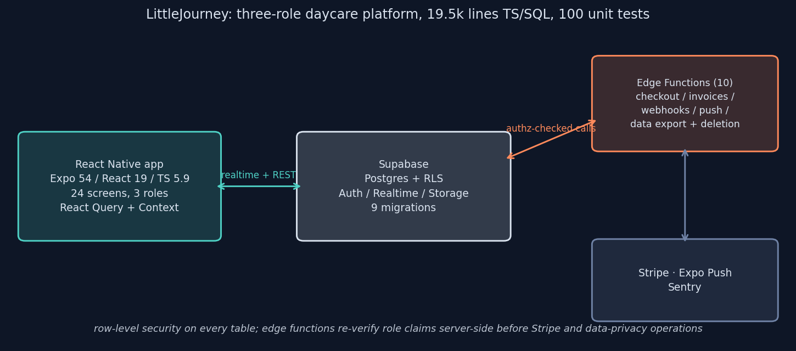
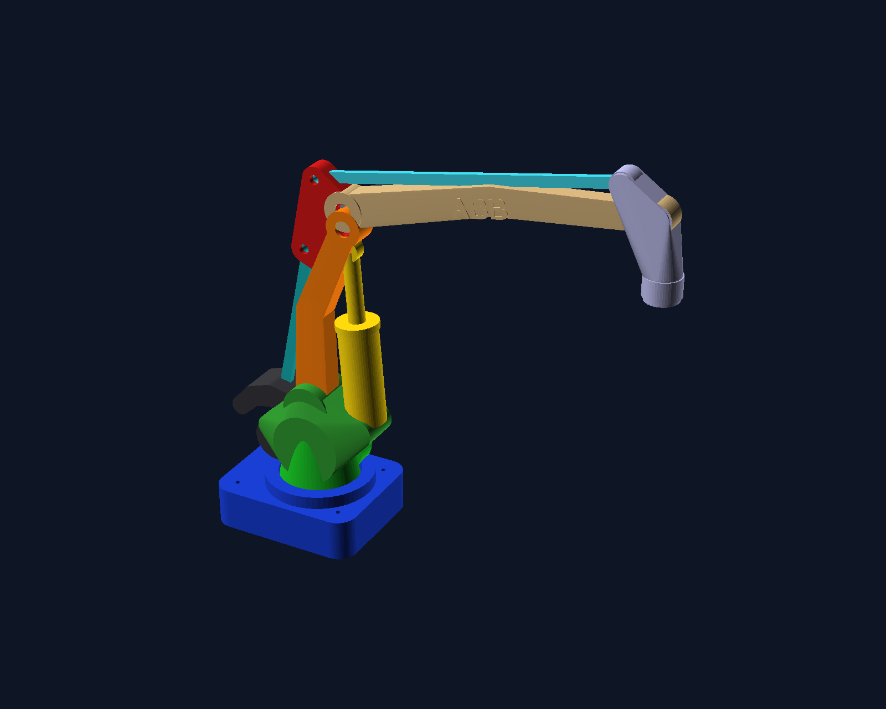

100
UNIT TESTS
Simulation work rides on software craft, and the craft gets exercised outside the lab too. The anchor here is LittleJourney, a production-grade three-role daycare platform I built end to end, alongside parametric CAD in OpenSCAD and the Python tooling that generates and themes this site.
LittleJourney keeps parents connected to their child's day: a realtime timeline of meals, naps, activities and photos, end-of-day narrative reports, encrypted messaging with caregivers, and tuition invoicing paid through Stripe. Caregivers log activities and attendance from the same app; admins manage enrollment, staff, and subscription tiers. Three roles, one codebase: Expo 54 and React 19 on TypeScript 5.9, backed by Supabase for Postgres, auth, realtime, and storage.

The parts I am proudest of are the unglamorous ones. Authorization is enforced twice, once by Postgres row-level security on every table and again inside the edge functions, so a compromised client still cannot reach another family's data; the most recent work was precisely an authorization-hardening pass across those functions. Payments run through dedicated functions for checkout, invoices, saved payment methods, and the Stripe webhook, and two functions exist purely for user rights: full data export and account deletion. A hundred unit tests and CI keep the 19.5 thousand lines of TypeScript and SQL honest.
The source is private, as the product carries live billing; this page and the architecture above are the case study.
For geometry that wants to be code, I model in OpenSCAD: fully parametric constructive solid geometry where every dimension is a named variable and an assembly is a function call. The piece below is an ABB IRB 760 palletizing robot modeled joint by joint, base, swing, parallel-linkage arm, and wrist, posable by setting joint angles. The same habit shows up in the research: the boiling chamber's CFD geometry lives as scripted, versioned CAD in the repository alongside the solver cases.

This site is itself a small software project, and its tooling lives in the repository. A hue-preserving dark-theme converter re-themes light matplotlib figures onto the site palette without touching a data pixel, which is how a decade's worth of research plots share one visual language here. A page generator renders these research and software pages from content modules through a single shared shell, so the design stays byte-consistent everywhere. And the publication-analysis scripts that produced the model-validation statistics ship in the research package, so every number on these pages traces to a script you can run.